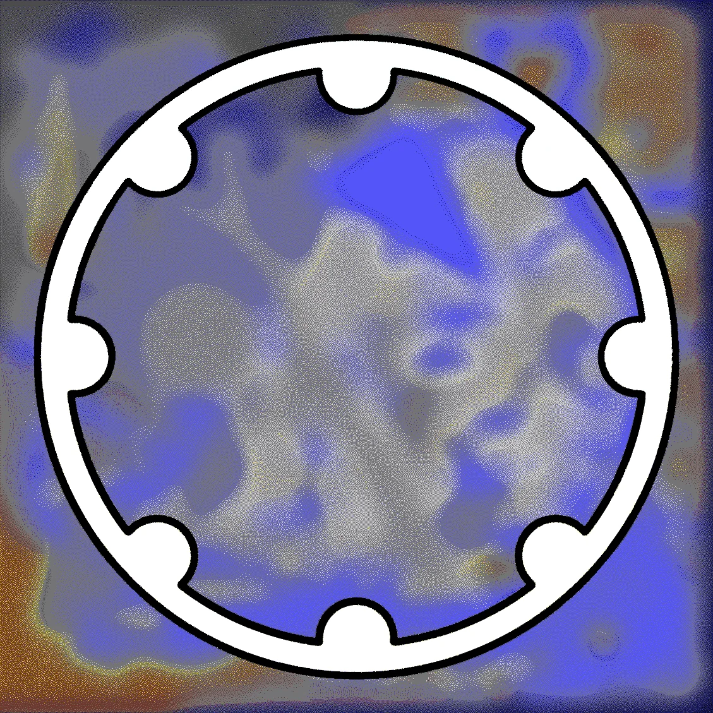
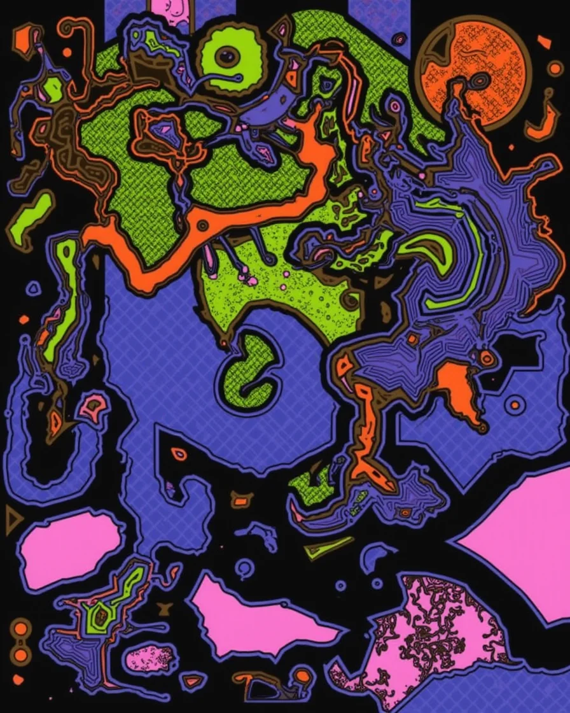
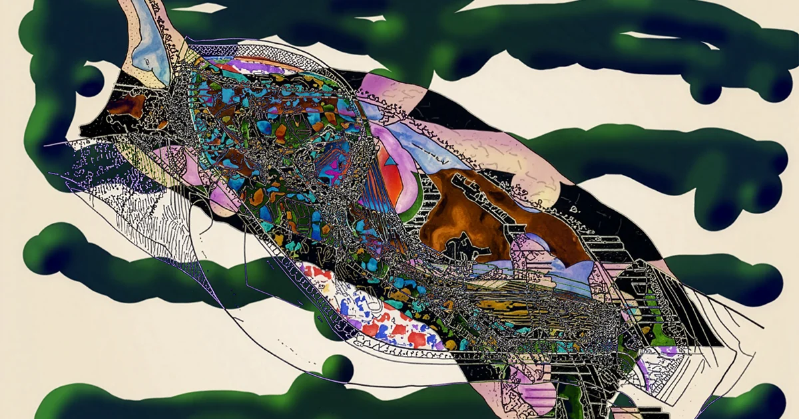

Personal accounts; no monitoring or policy yet.
A lecture · AI Capability Maturity Model
Durable AI Adoption
What happens when governance enables cultivation.
Two parallel tracks, five maturity levels, and the playbook that turns a workforce's discoveries into durable capability.

Your people are already adopting AI
Tools and workflows arrive through individual curiosity, long before any policy. Production cycles collapse from months to hours as people discover what AI can do on their own time.
Adoption is already underway. The only question is whether the organization can see it, learn from it, and build on it.
That shadow use is not a problem to stamp out. It is the raw material of durable adoption — the discoveries your program exists to surface, support, and scale.
Durable AI AdoptionForeword
AI is a paradigm, not an app subscription
Treated as a product, AI gets a procurement plan and an acceptable-use policy. But it is a general-purpose paradigm — like steam, electricity, or the personal computer — that an organization integrates into how it works.
That reframe changes the goal: not a finished rollout, but a capability you keep getting better at.
DeploymentStanding up one tool, policy, or workflow.
AdoptionThe long arc of integrating with the paradigm itself — something you get better at over time.
Durable AI AdoptionChapter 1
The AI paradigm unfolds in two parallel tracks
01Chat2022–23
Cultivated
- Everyday use of ChatGPT
- Personal-account exploration
- Prompt experimentation
Governed
- Acceptable-use policies
- Blanket bans (Samsung)
- First enterprise licenses
02Tools2023–24
Cultivated
- Custom GPTs and skills
- Prompt libraries and kits
- Team-authored workflows
Governed
- Sanctioned tool lists
- Enterprise vendor deals
- Verification checkpoints
03Agents2024–26
Cultivated
- Vibe-coding, agentic IDEs
- Agents with wallets
- AI-native function workflows
Governed
- Forward Deployed Engineers
- Agent governance protocols
- Model risk frameworks
04Factories2026–28
Cultivated
- One-person agent fleets
- Always-on personal pipelines
- Second brains
Governed
- Compute and token budgets
- Fleet-level observability
- Output-quality contracts
Durable AI AdoptionChapter 1
Adoption runs on two parallel tracks
Cultivated
What people invent as they use it
Bottom-up exploration, individual play, vernacular practice. Where the working patterns are actually discovered.
Governed
What the organization approves
Policy, procurement, rollout. The formal apparatus that makes good practice safe to scale.
Durable adoption is what happens when governance enables cultivation — both tracks moving together, not one or the other.
Durable AI AdoptionChapter 1
Govern the outputs, so people can explore
Shift from governing what people may do with AI to governing what its outputs must do where they become consequential — verified, escalated, and owned at the handoff.
A traffic light is a protocol
It governs coordination at the crossing and keeps the system moving.
A blockade is not
It restricts activity at the access point. Both are rules; only one keeps traffic flowing.
Good protocols produce non-events — the leak that did not happen, the brief not filed unverified — and free the cultivated track to keep finding what works.
Durable AI AdoptionChapter 1
The model
Five levels, two tracks
A path other general-purpose technologies have already travelled. Each level pairs a way of working that people cultivate with the protocol that governs it.
The maturity ladder
Cultivated — what people doGoverned — the protocol that holds it
 1
1
Play
Curiosity-driven exploration; AI as a medium for discovery.
Shadow
 2
2
KitWhere the market is now
Encoding workflows into reusable, shareable kits.
Sanctioned
Access approved, tools tracked, risk contained.
 3
3
Practice
New forms of work emerge; roles are redefined.
Engine
Workflows with named owners and quality metrics.

4Vernacular
Practices absorbed into culture, spread without mandates.
Infrastructure
AI a sector baseline; coordination crosses boundaries.

5Fluency
Second nature; AI no longer separately named.
Planetary
Civilization-scale; legibility is the challenge.
Durable AI AdoptionChapter 2
The levels are drawn from real cases
Play → Sanctioned
Samsung surfaced its shadow use
Engineers were already pasting code into ChatGPT. Samsung paused, then re-admitted AI under protocol — turning invisible use into governed practice.
Kit
Klarna & Anthropic Legal built kits
Teams encoded their own memos, frameworks, and workflows into reusable kits — the unit of productivity at this level.
Practice → Engine
Uber made AI core to engineering
With most code AI-assisted, the work shifted to review — so Uber built new protocols (Code Inbox, U Review) to keep the workflow flowing.
Infrastructure → Planetary
EDI, then the internet itself
Walmart's EDI made AI-era coordination a sector baseline; TCP/IP shows the planetary horizon — coordination no single actor controls.
Durable AI AdoptionChapter 2
People turn play into infrastructure
From 1903 to 1950, rural users jacked up the rear wheel of the family automobile and ran corn shellers, washing machines, and water pumps off it. The car was never sold as a power source. People made it one.
That improvisation is what eventually told Ford to ship trucks in 1916, and the industry to build the tractor.
The vernacular use comes first. The machinery that scales it is designed from what people already proved by hand.
Kline & Pinch (SCOT); Sachin Benny, 2026.
Durable AI AdoptionThe kit phase
Bottom-up discovery, top-down scale
The use case that matters already exists somewhere in operations. The job is to surface it, prove it, then pave the path so the next person inherits it.
Month 1
Forage
Find the 2–3 people already running real workflows on their own time. Connect their data sources.
Months 2–6
Seed
Champions show their teams a four-hour review compress to forty-five minutes. Count the kits they build.
Months 6+
Harvest
Promote the best kits company-wide with named owners, so new hires inherit them on day one.
Durable AI AdoptionChapters 3–4
Four patterns that hold the tension
Kit harvesting
Wait for variation to express itself, then formalize what domain experts have already proved by daily use.
Prevents · Premature optimizationStandardizing before the kit phase has done its work — the official workflow is rejected or outdated on arrival.
Plan after play
Let exploration run at its native speed, then plan continuously from what actually surfaced.
Prevents · DisorientationCommitments outpace shared understanding; exposure accumulates invisibly until it suddenly binds.
Differential gear trains
Buffer mismatched tempos — queues, async handoffs, routing — so each side runs at its own pace.
Prevents · Tempo misalignmentAI speeds some steps but not others, so output stacks up at the slowest process or partner.
Constitutional software
Compile governance limits into code: sandboxes, planning-only modes, rollback paths the agent cannot cross.
Prevents · Extended blast radiusPermissions outrun judgment, and a failure becomes consequential before anyone can intervene.
Durable AI AdoptionChapter 7
The new nature of work
AI-mediated work is now closer to weather and terrain than to a thermostat you set once.
Because the terrain keeps moving, durable adoption depends on governance enabling cultivation rather than displacing it. The scarce skill is applied curiosity — the people who find their way through unfamiliar ground.
Durable AI AdoptionChapter 8
Where is your organization?
Place yourself, plan the next level up
A two-minute web assessment returns your placement across the five levels, the patterns that fit it, and a recommended next move — on both tracks.
Durable AI AdoptionChapter 6
Go further · 2026 Protocol Symposium · New Nature
Build your first Kit with us
AI Kitcraft — a hands-on AI tooling workshop.
Move from ad-hoc AI use to a reusable Kit your team can re-run, then map a path to scale it. Climb both tracks — Play, Kit, Practice — by hand.
Online · two workshop days
1 talk + 4 working sessions
10–15 seats